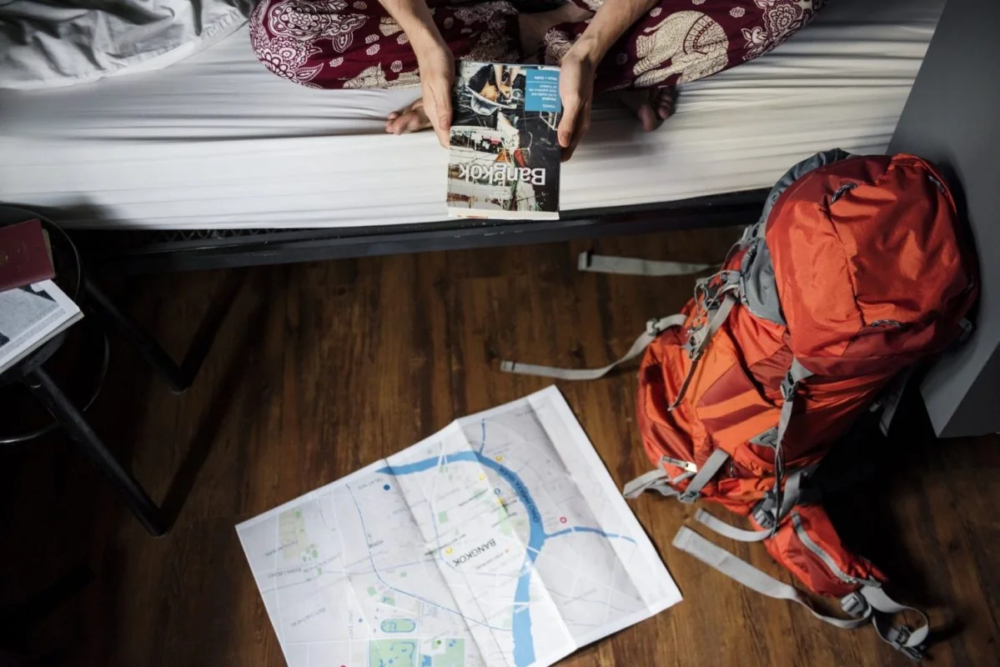

Five months at Chiang Mai. A lecture phase learning to know God, His Word and His world, then an outreach phase somewhere in Asia. No prior Bible training assumed.
DTS is YWAM's entry level course, and it embodies the mission the whole organisation runs on: to know God and to make Him known. Our utmost desire is that students encounter Jesus Christ personally and learn to hear His voice.
It assumes nothing on the way in. No theology degree, no ministry experience, no particular idea of what you will do afterwards. What it does assume is that you will live alongside the other students for five months, which turns out to teach most of what a classroom cannot.
The shape of it
Two phases, and the second one is not a field trip.
Every DTS worldwide is built the same way. The first half is taught, the second half is done, and students who have only completed the first half have not completed a DTS.
Lecture phase
Knowing God, His Word and His world. The aim is transformation and a renewed mind rather than information, and the learning comes from teachers, from practical training, and from living in community with people who will notice how you actually are.
Outreach phase
The class breaks into teams and goes out into the world to serve. Students discover what they are capable of while caring for people and sharing the gospel, usually in a setting that removes most of their normal supports.
Outreach
Somewhere in Asia, with a team you did not pick.
Chiang Mai sits inside one of the densest concentrations of unreached peoples anywhere, and the base works among six or more people groups in the city and the surrounding region. Groups coming from outside to serve here are placed through our outreach teams department. Outreach teams go out from that base into Thailand and beyond it.
We do not publish outreach destinations in advance on this page, because they change with each intake and with what partners on the ground are asking for. Ask us what recent schools have done and where the next one is likely to go.

Most of outreach is ordinary logistics, right up until it is not.
How to apply
Three steps, in this order.
There is no online application form at present. You download the application, or ask us and we will send you a PDF and help you through it.
1. Apply
Complete the application form and send it back to us. Ask for the PDF if you cannot find it, this part should not be the hard bit.
2. Pay the application fee
$50 USD for an individual, $75 USD per couple. Paid through the YWAM Thailand donation page, tagged "DTS Chiang Mai" with the note "Application Fee". Western Union works if PayPal does not.
3. Complete your references
Reference forms go to the people you name. The application is not finished until they come back, so give your referees plenty of warning.
The application fee covers your University of the Nations student fees, the invitation letter you will need to get a Thai visa if your passport requires one, and pre-ordered books and school supplies. It is separate from the school fee itself, which is not published on this page. Ask us for the current figure and the next intake date before you plan anything around them.
What comes after
Almost everything else starts here.
DTS is the prerequisite for most of what follows it. Much of the University of the Nations catalogue expects a completed DTS before you can enrol, and so do most YWAM staff roles, including here at this base.
That is worth knowing before you start rather than after. People arrive for a five month course and leave having accidentally chosen a direction, which is either the best or the most inconvenient thing about it depending on the week you ask them.
Get involved
Start the application
Tell us roughly when you are thinking of coming and we will tell you what is running, what it costs and what your visa situation looks like from where you are.

Follow along
Get social
We post base news, including school and outreach updates, on Facebook and Twitter. The wider YWAM Thailand picture is at ywamthai.org.